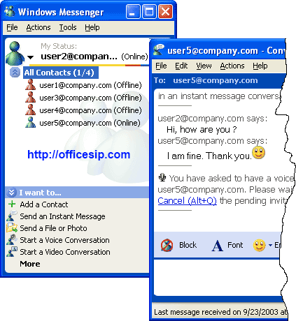
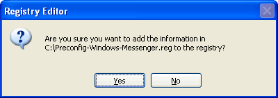
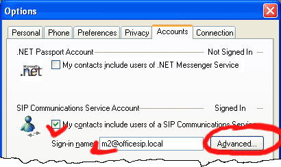
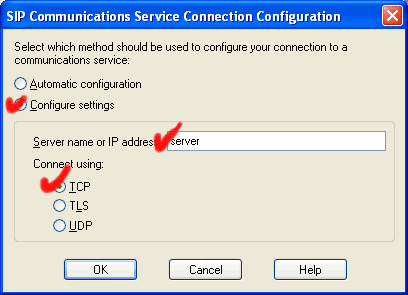

Microsoft Windows Messenger
Windows Messenger allows instant messages and voice conversation with other contacts using SIP server.
- Download Windows Messenger 5.1.msi (7.1 Mb)
- Download Multilingual User Interface Package for Messenger 5.1 (7.35 Mb)
Supported Operating Systems: Windows 2000; Windows Server 2003; Windows XP.
Configuration
To configure Windows Messenger for OfficeSIP Server, do the following:
1). Change hidden options of Windows Messenger
1.1). Download and unzip Preconfig-Windows-Messenger.reg file
1.2). Double-click on Preconfig-Windows-Messenger.reg and click Yes

1.3). Restart Windows Messenger
2). Select Tools/Options from Messenger's main menu
3). Select Accounts tab

4). Check My contacts include users of a SIP Communications Service
5). Enter Sign-in name
6). Click Adavnced

7). Check Configure settings, enter Server name, check TCP item
8). Click Ok, Click Ok